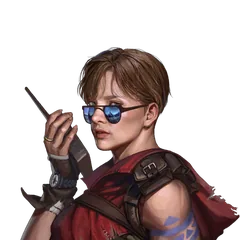

หน้าแรก › การเติบโต
ฉายา ใช้ได้
ฉายาได้จากการแนะแนวอาชีพ องค์กร และเลเวล ใส่ได้ทีละ 1 ใบ คนอื่นเห็น และให้โบนัสค่าสถานะ
บางหัวข้อในหน้านี้ยังไม่เสร็จ
ฉายา คือคำที่ขึ้นเหนือชื่อตัวละคร คนรอบตัวก็เห็น ใส่ได้ ทีละ 1 ใบ และฉายาที่ใส่อยู่ให้ โบนัสค่าสถานะ ด้วย ฉายาที่ได้แล้วเก็บไว้ถาวร จะสลับใส่ใบไหนก็ได้
ทำอะไรได้บ้าง
- เก็บฉายาจาก การแนะแนวอาชีพ มิตรภาพกับ องค์กร และเลเวลตัวละคร
- เลือกฉายาที่จะใส่ หรือถอดออก
- ใช้โบนัสของฉายาเสริมสายที่เล่น เช่น เลือดสูงสุด หรือความสามารถคราฟต์
ทางได้ฉายา ใช้ได้
| ทางได้ | จำนวน | เงื่อนไข |
|---|---|---|
| การแนะแนวอาชีพ | 58 | ทำหลักสูตรครบแล้วกดรับรางวัล (1 หลักสูตร = 1 ฉายา) |
| องค์กรหลัก 4 องค์กร | 16 | มิตรภาพองค์กรถึง Lv.2 / 5 / 8 / 11 |
| เลเวลตัวละคร | 3 | ตัวละครถึง Lv.2 / 5 / 10 |
| อีเวนต์ ซีซัน และการแข่งขัน | 10 | แจกในอีเวนต์ |
- ได้ฉายาระหว่างเล่น (เลเวลขึ้นหรือมิตรภาพขึ้น) จะมีข้อความ ได้รับฉายา: …
- ได้ ย้อนหลัง ด้วย ตัวละครที่ถึงเงื่อนไขอยู่แล้วจะเห็นฉายาในรายการตอนล็อกอิน
ฉายาเลเวล ใช้ได้
| เลเวลตัวละคร | ฉายา | โบนัส |
|---|---|---|
| 2 | กำลังจะเป็น | พละกำลัง +1 · คล่องแคล่ว +1 |
| 5 | ผู้กล้า | พละกำลัง +2 · คล่องแคล่ว +2 |
| 10 | ผู้ใหญ่ | พละกำลัง +3 · คล่องแคล่ว +3 |
ฉายาองค์กร ใช้ได้

| องค์กร | Lv.2 | Lv.5 | Lv.8 | Lv.11 | ค่าที่ได้ |
|---|---|---|---|---|---|
| สภาคลอโรฟิลล์ | เซลล์สีเขียว | สีเขียวได้เกิดขึ้นอีก | ผึ้งงานจอมขยัน | ผู้เชี่ยวชาญระบบนิเวศ | ความว่องไว · ความมุ่งมั่น |
| สภาผู้บุกเบิก | นิ้วเท้าทั้งห้าของตัวช่อง | ไม่ใช่เด็กฝึกอีกแล้ว | พวกชอบเลีย | ผู้บริหารที่ถูกเอาอกเอาใจ | ความอดทน · ความเฉลียวฉลาด |
| คอมปะนี | วิทยุสื่อสาร | คนรู้จักของเคย์ | ใจดี | ไว้ใจได้ | ทักษะพิเศษ · คล่องแคล่ว |
| คณะกรรมการ | อ่อนด้อย | เชื่อฟัง | โดนแกล้ง | ใฝ่หาทางสงบ | พละกำลัง · ความอดทน |
โบนัสไล่ตามขั้น: Lv.2 +7 / +3 · Lv.5 +15 / +5 · Lv.8 +22 / +8 · Lv.11 +30 / +10 (ค่าแรก / ค่าที่สองในคอลัมน์ขวาสุด)
ใส่และโชว์ฉายา ใช้ได้
- เปิด ข้อมูลตัวละคร
- กด เลือกฉายา แล้วเลือกฉายาที่มี
- อยากถอด ให้เลือก ไม่มีฉายา
- ฉายาขึ้นเหนือหัวทันที คนที่อยู่ใกล้เห็นเปลี่ยนตามทันที
- ออกจากเกมแล้วเข้าใหม่ ฉายายังอยู่
- เลือกได้เฉพาะฉายาที่ได้แล้ว
- ใช้ฉายาเดียวกันทุกชุดอุปกรณ์ (preset)
โบนัสของฉายา ใช้ได้
ให้โบนัสเฉพาะ ฉายาที่ใส่อยู่ เปลี่ยนหรือถอดฉายาแล้วโบนัสเปลี่ยนทันที ดูตัวเลขได้ที่หน้า สถิติ ของตัวละคร
ค่าพื้นฐาน 8 ตัว: พละกำลัง · ทักษะพิเศษ · คล่องแคล่ว · ความว่องไว · ความอดทน · ความมุ่งมั่น · ความเฉลียวฉลาด · การรับรู้
- ความอดทน +1 = เลือดสูงสุด +2
- ความมุ่งมั่น +1 = พลังงานสูงสุด +0.8
โบนัสพิเศษ (บางฉายา):
| โบนัส | ผล |
|---|---|
| เลือดสูงสุด | เพิ่มเพดานหลอดเลือดจริง |
| พลังงานสูงสุด | เพิ่มเพดานหลอดพลังงานจริง |
| ฟื้นเลือด | ฟื้นเลือดทุกวินาที |
| ความแม่นยำ | เพิ่มค่าความแม่นยำในหน้าสถิติ |
| ความสามารถคราฟต์สายต่าง ๆ | เพิ่มค่าในหน้าสถิติ |
| ตัวอย่างฉายา | ค่าพื้นฐาน | โบนัสพิเศษ |
|---|---|---|
| กลยุทธ์การล่าสัตว์พื้นฐาน (แนะแนวอาชีพ ระดับ 1) | พละกำลัง +5 · ความอดทน +5 | เลือดสูงสุด +40 → รวมเลือดสูงสุด +50 |
| การต่อสู้ด้วยมือเดียว: จิตวิทยาอาชญากรรม (ระดับ 4) | พละกำลัง +30 | ฟื้นเลือด +1.5 ต่อวินาที |
| จัดการครัว (ระดับ 4) | ทักษะพิเศษ +30 | ความสามารถทำอาหาร +4 |
| นักล่าที่เก่งกาจที่สุด (อีเวนต์) | ทุกค่า +30 | เลือดสูงสุด +150 · ฟื้นเลือด +2 · ความแม่นยำ +20 · พลังงานสูงสุด +50 |
ยังไม่เสร็จ ยังไม่เสร็จ
- ฉายาของ มหาวิทยาลัยเรดิโอ และ หน่วยช่วยชีวิต (8 ใบ) ยังได้ไม่ได้ เพราะยังไม่มีทางเพิ่มมิตรภาพกับ 2 องค์กรนี้ ส่วนฉายาใบที่ 4 ของมหาวิทยาลัยเรดิโอต้องใช้เลเวลมิตรภาพเกินเลเวลสูงสุดขององค์กร
- โบนัสพิเศษ 3 แบบยังไม่มีผล: โอกาสได้แท็กสุ่ม (5 ฉายา) · ลดคูลดาวน์การป้องกัน และลดสแตมินาตอนป้องกัน (1 ฉายา) ค่าพื้นฐานของฉายาเหล่านี้ยังได้ตามปกติ
- ค่าพื้นฐานนอกจากความอดทนและความมุ่งมั่น ตอนนี้ขึ้นในหน้าสถิติอย่างเดียว ยังไม่มีผลอื่น
- เกมจำฉายาแยกตามชุดอุปกรณ์ได้ แต่เซิร์ฟตอนนี้ใช้ฉายาเดียวกันทุกชุด